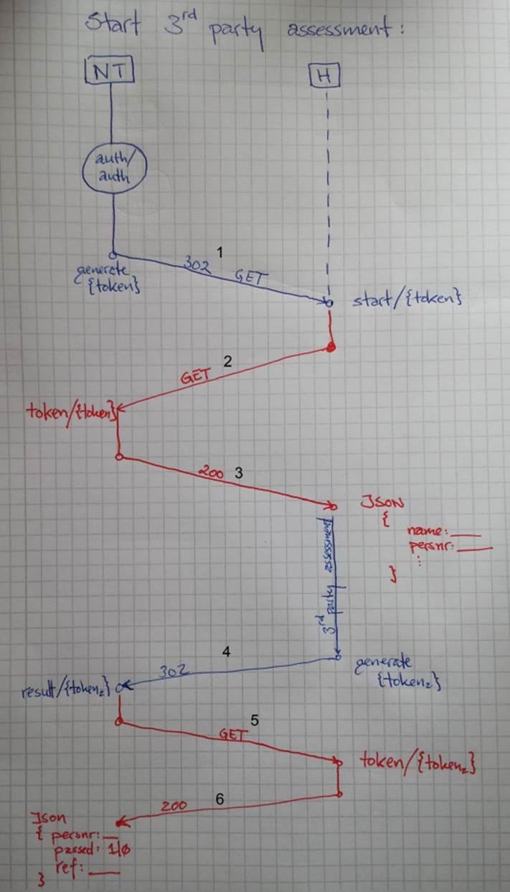
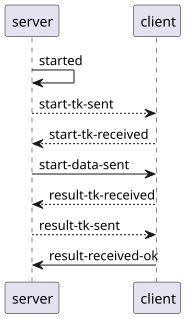

Toolcall protocol¶
The following actor names are used synonymously:
- user/candidate/browser:
The person starting the tool/exam.
- client/tool:
The external (to NorskTest) entity that runs the tool.
- server/NorskTest:
That’s us.
- tool/exam:
The “thing” being run (most frequently an exam).


The user/browser is indicated in blue, red is server-to-server communication over a secure channel (ie. https).
We authenticate and authorize the Candidate so only candidates that have been logged in with us are sent to
toolcall. We generate a unique token and redirect the candidate to an url defined in thetoolcall.models.tool_models.Clientmodel.The client sends a server-to-server GET request over a secure channel.
NorskTest returns json-data containing tool start data. The data can/is customized to the individual client. The start-data:
must include a uniqe person reference (the client can e.g. use this to adapt the test when the candidate starts the second attempt). The person reference is sent back to NorskTest in step #6.
can include the name of the candidate (for personalization).
etc.
The client runs the (external) tool and sends a (new) token back to NorskTest
This is shown as a redirect in the diagram, meaning that it is possible for the candidate to return to the portal (whence they started the tool call). This should be a server-to-server communication if the user shouldn’t be redirected back to NorskTest.
NorskTest sends a server-to-server GET request over a secure channel.
The client returns result-data in json format, containing the unique person reference (as received in #3), pass/fail, and a opaque id that can be used to track the call after the fact (to support complaint processing etc.)
The client ought to be able to validate its own tokens (e.g. by adding a checksum).
The token must only be valid for a short period of time, i.e. the period between 1 to 2, and 4 to 5, must be short. This will prevent a situation where an attacker has a large set of valid tokens that can be attacked.
It must only be possible to resolve a token once (to prevent replay attacks).
Tokens ought to be saved (or logged) so it is possible to debug the system across the server/client boundary.
Note
It is possible to implement a token transformation (decryption) between 1/2 and 4/5 so tokens transmitted over an open channel must be encrypted before sending on a secure channel. This is currently not seen as necessary.